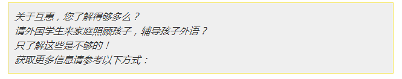

互惠动态
|
|
让孩子学英语是为了什么？
周末一小聚，节日一大聚，双十一来临之际，闺蜜H和M又聚到一起开始展示自己的购物车，鞋子、包包、口红.....
“咦，怎么还有英语画册？准备送给谁啊？”
“谁也不送，给我家宝贝儿子准备的。”
原来M已经开始打算让三岁的儿子学英语了，还为他选择了一家专业的教育机构，每周的周末，她儿子会完全沉浸在英语氛围的娱乐和学习中。
H大叫：“你这女人也太残忍了吧！我没有记错的话，你家娃才刚刚三周岁吧，我以后可不会让我的孩子过的这么辛苦，我一定给他/她一个快乐的童年。况且也没有必要学那洋玩意，咱先学好普通话就可以了。”
一提到学“学英语”这三个字，我发现很多人都会各种脑补背单词、学语法，甚至是无休止的考级。
有不少人对英语在潜意识里有一种抗拒心理。因为应试教育的那条路，把英语作为一种手段和目的，完全站在了语言的对立面。可以说，很多说着一口流利英语的人，也并没有真的享受英语带来的快乐。
英语到底是什么？它从来不只是一种语言，它是一种完全不同的思维方式。
比如，我们中国人习惯把姓放在前面,把名放在后面,英语国家的正好跟我们相反,他们习惯把名字放在姓的前面。
因为我们是文明古国，对祖先和出处很敬畏；美国人崇尚自由独立，他们更尊重自己。
比如，英语按照事情重要程度描述问题——“I saved a boy who fell into water when I was walking alone”，中国人按照时间顺序描述问题——我上午散步的时候救了一个落水儿童。
因为中国人很含蓄，强调事物发展的过程；美国人很直接，强调结果和效率。
电影《西雅图不眠夜》里有一句经典台词——失去妻子的萨姆得到一份深情地劝说：真正爱过，才懂得怎样再一次去爱，这是对爱的尊重。
但这跟中国人的观念是不一样的，“千里孤坟，无处话凄凉。”我们会觉得，真正爱过一个人，内心再也容不下他人。
语言规律里，无处不在地包含着民族习惯、文化背景、思维方式。所以，学习语言，从来不是学习语言本身，学的是一种完全不同的看待世界的方式，只有语言，可以把这种方式，潜移默化成一种本能。
如果粗暴且不科学地把中文思维方式比作左脑，英文思维方式比作右脑，它们两个没有优劣之分，如果孩子能够同时拥有，未来他看待问题的时候，会多一种选择。
现在谈论让孩子参与学前学习，是背负巨大压力的，动辄就会被“成功学、功利心和虚荣”这顶帽子压垮。有不少父母，偷偷摸摸给孩子报私教，明面上，却摆出一副我要给我孩子足够快乐童年的样子，生怕他人指责。
我就不明白了，什么时候，学习和快乐已经如此对立？
到底是我们妖魔化了学习，还是我们神圣化了快乐？
孩子的学习是天性。从他努力把勺子准确地放进嘴里，从他满头大汗协调双腿踢出第一个球，从他字句不畅地第一次发表观点，好奇促使他模仿，学习是一种本能。
开放的环境、充足的资源、良性的引导，是可以做到自然而然地捕捉和激发孩子的学习欲望的。
没有错的学习目的，只有错的学习方式。
比如，你希望三岁的孩子学习英语，这个初心并没有错；但你逼他每天背多少单词，多少天内看懂原声英语电影，甚至考不到证书就打击羞辱，你的方式错了。
这就是典型的，作为家长，教育的控制欲和控制力没有匹配。
同事家的女儿今年5岁，从3岁开始，家里就请了个互惠生，从未学过英语的她模仿能力很强，她就像复读机一样，互惠生说什么她就说什么，而且发音很标准，即使长的单词也能准确简单的发出来。逐渐地她认识了很多单词，积累了一定的词汇量，而她的收获是在这种毫无任何压力下得到的，英语就像她的第二母语一样。
很多家长都会说：“孩子我为你好”。
不，强调付出感的“我为你好”需要回报，但不论带孩子学习什么，包括英语，请不要强调回报；甚至，请不要苛求效果，这只是你自身经过思考后，提供给孩子的一个“可能”。
我们让孩子去尝试那么多可能性，是为了他们有朝一日评我们为好家长吗？这一天恐怕不会到来，参考一下现在我们对父母的种种不满，以及，遇到任何困惑都可以扔进“原生家庭”这个大箩筐，我们很容易就会想明白——为人父母，几乎是注定会被用户差评的一份工作。
父母的使命，不应该为换回感激而存在——我们的努力，是避免因为我们的不思考、不觉察、不作为，孩子失去了另一种可能。
孩子，你学了一些英文，下次在三里屯吃饭，遇到很多肤色的孩子，也许你就不会犹豫，会毫无障碍地走过去跟他们一起玩玩具。
孩子，你学了一些英文，也许心中就埋下了对某个原版绘本、某个外国电影中提到的城市或者故事的好奇，想去多一点了解。
孩子，你学了一些英文，也许接纳起印着英文的东西会容易些，尽管你不全懂。有个世界离你还远，但那并不让你陌生。
命运命运，家长给出了命，孩子走完自己的运。这命，不仅是说财富、地位、学识，而是父母给孩子提供了多少可能，让孩子有了多少选择。但孩子有没有理解，不是我们该要求的东西。
家长为孩子做那么多，只是想多放几把未知的钥匙在孩子的手里，让他去碰碰运气，去开不同的门，感受一下不同的风景。
